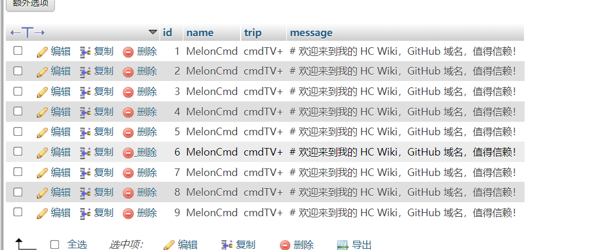
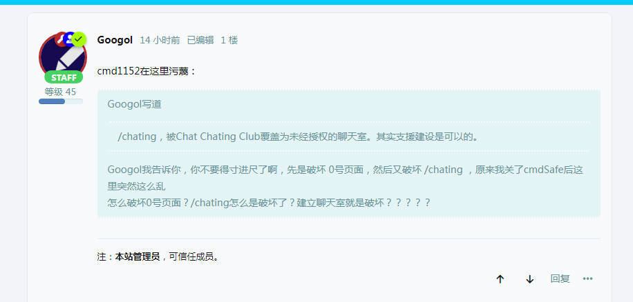
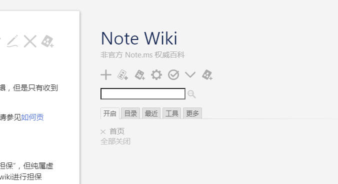
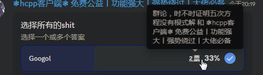

在从notewiki开始之前，我先评价Googol在 hc （请见hcwiki）聊天室做的一个事情
首先使用高亮加大标题（约为h1元素大小）宣传他的notewiki，然后说Github担保（记住这个担保2字，后面要考），Github什么时候为Github pages页面担保了？
后面笔者询问他时，诶他又不承认他说过“Github”担保了，哪怕是列出了 SELECT * FROM chat WHERE text LIKE '%github担保%'; （记住这个SQL命令）查询的历史记录，他也直接说这是伪造的（这里后面也要考）
然后就说notewiki的内容吧，首先说 “注：404竟然冒充HC Wiki的创建者，HC Wiki明明是 4n0n4me 创建的。”，这和说鲁迅抄袭周树人的文笔一样可笑，404就是4n0n4me，后面404出面表明他是4n0n4me时，Googol要求404证明自己是4n0n4me ¯\_(ツ)_/¯
“CleanNote是一个Note.ms的毁灭组织，组织创建者为Anonymous_user。其自称对页面进行清理，实际的行为是将页面覆盖为CleanNote的被清理页面提示。”
我承认是有破坏者冒充CleanNote去破坏页面，因为有人也冒充我去破坏页面过，但是CleanNote并没有做这些事情
然后开始说notebbs吧，就是因为在 notemsbbs 违规被封禁了，Googol自己造的一个网站，
然后冒充yu22c 担保 这个网站 是真实的，诶你发现没有，怎么为Googol说话的人语法都出奇一致呢？（后面Googol不装了，直接就说这个yu22c其实是假的了）
里面的帖子和 notemsbbs 出奇相似（而且生搬硬套，有点帖子不适用的也直接搬过去了，发布日期也是很离谱，1天发10篇，发布日期比notemsbbs晚很多）
notebbs4 是因为 notebbs 被长期DDOS，避难用的，notemsbbs 都没事，就Googol的 notebbs 有事了
在2024年4月份说自己在某个wiki网站上拿了个什么编辑荣誉，然后现在被那个wiki网站的管理员封禁了，现在跑到 hcbbs 去谴责那个管理员
（重点，后面反复提到这里）你要反驳Googol的话，Googol让你拿证据，你如果让Googol他拿证据证明他是对的，那么他会要求你先提供证据（证明一个不存在的证据是假的是吧），哪怕你提供了，如果他有权限的话，那么他直接给你编辑/删除了，没法编辑/删除的就说是伪造的
Googol 在 hc 直接被ban（封禁）了3次以上，最近又去闹事，被踢出后直接找管理员举报我滥用职权，然后没成功，因为我有正当理由，然后Googol又开始无理取闹了：
Googol：这里还不如 IRC
bacon：那你就用你的IRC去，别用这里
Googol先在 hc 的 lounge 频道询问 “你们” trip（见 hcwiki 对 trip 的解释） 那么好看，怎么做的
一个人开了个玩笑，说是通过Brain计算的，把密码和salt拼接然后SHA-256再BASE64最后取前面6位
Googol又问salt怎么获得，然后他翻遍了github的仓库，也没看见 salt.key ，更是试图访问 https://hack.chat/salt.key
然后那人又开个玩笑：“你可以SSH登录hc的服务器自己看看”
Googol信以为真，前往 hc 的 programming 频道通过报告不存在的漏洞来获得服务器的 SSH ，经过多次被管理员识破后被封禁
Googol在notewiki写下了这句话：
“声明：最近有Hack.Chat成员MelonCmd声称某个成员打广告提到“GitHub担保”，但纯属虚假！Googol没有声称“GitHub担保”，也没有证据。且GitHub Pages不对本wiki进行担保。”
不得不说Googol的颠倒黑白能力不亚于创哥小木，Googol打广告时确确实实是说了“Github”担保，我也提供了证据（见前面的那句SQL命令），后面的那句“且GitHub Pages不对本wiki进行担保”直接纯粹是把我之前说他的内容转述了一次（原内容：“神TM Github担保，Github可不会对Github Pages担保”）
这是SELECT * FROM chat WHERE text LIKE '%github担保%'; 在 24a 的 Lookup 数据库的查询结果：
Lookup> sql SELECT * FROM chat WHERE text LIKE '%github担保%'; Requesting... [kTcHER]googol: Tue May 28 17:19:17 2024 # 唯一正确消息wiki： https://notewiki.github.io github担保
Googol不出所料的说这是伪造的了 —— cmd1152
Googol去Cppreference试图引导用户进行人身攻击，但是被撤销了多次
最后一个（91552）的编辑记录Googol甚至用“所有撤销本用户编辑者将立即封禁”当用户名 —— cmd1152
Googol在所谓的“notewiki”写了下面这几段话
MelonCmd是在HackChat中?lounge有协管机器人的权限。但是利用权限滥用职权，随意踢出Googol，帮助Rope冒充Googol。在Note.ms中添加声称“Gongxiang01”罪行的内容，其内容为丑化罪行，多为不实内容。甚至不知道Googol不是Gongxiang01。
补：SQL语句证据错误，无法证明MySQL中数据库内容不是伪造的
首先第一条，我并没有滥用职权，而且也没有人冒充你，我踢出你是因为你进行刷屏（Googol打广告使用一级标题，而且反复发送，而且还存在不实信息“github 担保”），而且你怎么证明Googol不是Gongxiang01（以其人之道还治其人之身）
其次第二条，Googol还是一如既往的（见前面的“...那么他直接给你编辑/删除了，没法编辑/删除的就说是伪造的”）要是想证明我可以找一堆人证明
Googol在他的notewiki写道
本wiki类似于HC Wiki。但是权威性超过维基百科。
夏天发烧把脑子烧坏了？？？
为了防止Googol说他“又”没写过，这是Commit记录（Googol删储存库了？点我查看位于Archive的备份）
1.189.159.33 是Googol的IP 至少SheepRealms在mcw和cppref上都检索到了这个IP与Googol有关
根据IP属地查询此IP归属 黑龙江省哈尔滨市 联通
根据另一个工具的查询是在 哈尔滨 阿城 八路胡同 （更精确的查询我做不到，根据相关法律）
各位网站管理员可以自主选择封禁
通过对3个账号的密码哈希、邮箱信息、网站等分析，确认了这3个账号都是同一个人
而且也通过技术手段登录 notebbs 后台，查看了账号信息，发现存在两个（或以上）个账号绑定在同一个邮箱的情况下
Googol这下怎么办？而且MCBBS Wiki也写了，绵羊领域（一位MCBBS版主）也说了：
Gongxiang01（另有马甲“Googol”、“googologyer”等）
当然，Googol肯定还是那几句话：
而且他说 泄露他人IP地址违法 时，引用的法律是是泄露并传播身份证信息的，咋的，能通过ip知道你身份证是吧，不过还真能知道，知道前6位身份证号码（doge）
那我还说Googol引导他人对我进行人身攻击呢~
现在最近发生的事情大家都知道了吧，Googol创建的哪个什么ProtectNote自称是保护组织，然后说CleanNote是破坏组织，还在覆盖大部分页面
导致大量页面丢失，被覆盖成了下面的样子
本页面由于<原因>，故ProtectNote目前保护这个页面 ————————————————新闻—————————————— ProtectNote 正在邀请您加入我们！前往：https://note.freeflarum.com/d/325-protectnote%E7%BB%84%E7%BB%87%E4%BB%8B%E7%BB%8D%E5%8F%8A%E5%8A%A0%E5%85%A5/7 <或者其他新闻> ————————————————正文—————————————— <原页面内容>
我没写错，原来的内容变成了<原页面内容>，然后他这个原因就是<原因>，咋的，模板字符串符号写错了是吧，那也用不着中文变量啊？
目前 1到4位的小写字母+数字的组合页面都是这Googol覆盖的，然后被CleanNote删除后，就直接造谣 CleanNote 破坏了这些页面，
人话就是CleanNote动了Googol的蛋糕呗~
Googol的Github账号被恶意封禁
这下Github的管理人员都看不下你这种人……
Googol在他的NoteWiki上写道
Googol是一个维护Note.ms页面，反对22c组的人。但是被好多人虐待。希望您能支持Googol。
我还是想说那句话，一个人骂你，你可以说是他的问题，如果是一群人骂你，你得反思反思你自己的所作所为了
你继续破坏网络，只会迎来网络暴力
首先，虽然我尽可能用客观角度描写Googol的行为，但是有时候情绪会冲破我的理智
在之前，先在Cppreference上引导用户去人身攻击au
现在，又开始覆写 note.ms/0 页面，写了这些话
MelonCmd 你妈死了！
让我预言一下，Googol肯定会说
你没有证据证明是Googol做的
但是这个页面对谁最不利，是谁天天删，我就不多说了，各位都知道
然后，Googol又引导用户对其他网站进行 DDOS 攻击
Googol在NoteBBS的这篇帖子写道
除非 https://hcwiki.github.io 的首页加上一个“4n0n4me 是 404”
我也懒得跟一个傻子争，所以索性没有pr
Googol在NoteBBS的这篇写道
HackChat 因为 MelonCmd 暴政行为，sora 帮助 Googol 冒充者等行为，所以被墙了。即使不被墙我也会举报。庆祝 HC 被墙！大家可以转而使用 IRC。
IRC 在：https://freenode.net，这里可以直接在 Web 访问。
HC++也被墙了
呀~ 是谁偷偷删除/编辑帖子呢？是谁在 Wikipedia 上评论于对他的举报，随后被他其亲自邀请的管理员封禁，又是谁举报MelonCmd暴政反被管理员封禁呢？
这还真得感谢GFW，让Googol这种人渣不会来骚扰我们
HC++被墙是一个巨大的笑话，hc++就是一个前端客户端，你甚至可以本地部署，而且我测试了 hach.chat 在全国的访问速度，一切正常
一般来说，代码页面都是临时传一下代码，等Googol发现的时候，早就被丢弃了
这和之前 Notepad++ 往用户代码塞东西一样ex
Googol写道
/chating，被Chat Chating Club覆盖为未经授权的聊天室。其实支援建设是可以的。
Googol我告诉你，你不要得寸进尺了啊，先是破坏 0号页面，然后又破坏 /chating ，原来我关了cmdSafe后这里突然这么乱
Googol在NoteBBS的这里写道

先不说Googol压根不会编写hc机器人，然后我什么时候有HC Wiki了？
而且我之前引用的数据库是由 0x24a 制作（只读的，无法执行sql命令修改），而且其他HC用户都在场，但是只看见你的刷屏
而且就算是0x24a为了污蔑你，那么 Dpg 的 Lookup 怎么证明？whoami的数据库怎么证明？

还是那句话，我的监听器记录到了71条修改 /0 的记录，大部分都是 Googol 删除的
而且建聊天室还要经过你的授权吗？你哪来的权利啊？
Googol真搞笑，他说SheepRealms在https://prts.wiki/w/Special:%E7%94%A8%E6%88%B7%E8%B4%A1%E7%8C%AE/User:Sheep-realms破坏，但是我看了看，哪破坏了，Googol倒是给个页面地址啊
大部分都站不住脚，而且人人都知道你这个人渣，和个全网公敌一样
Googol这下怎么办？而且MCBBS Wiki也写了，绵羊领域（一位MCBBS版主）也说了：
Gongxiang01（另有马甲“Googol”、“googologyer”等）
Sheep-realms涉嫌多项违法，其属于不可靠来源。
Googol也真是6，Sheep-realms是管理员，难道他不能通过后台看见你的信息吗？咋地？访问后台是违反行为是吧？
你知不知道什么是冒充？？？最近很多人冒充ProtectNote毁灭页面。
我记得我写过最近很多人冒充CleanNote破坏页面，你双标太明显了
我的Github账号没有被封禁，是被标记，flagged（被标记）和 blocked（被封禁）都分不清……
你NoteWiki写的“Googol的Github账号被恶意封禁”，前后矛盾.jpg
我影响用户了吗？我是在注释里插入。你知不知道注释是什么？
首先，你插入注释难道不是往代码里面插入吗，其次我观察了几个被Googol修改的Notems页面，你tm一个广告要7行注释，你生怕看不见是吧
你的监听器是什么？你的监听器只在你这一次提到。/chating的聊天室是我先建立的。
据Ect的/chating的监听器，我找了半天，从2023到现在，没看见里面包含任何的 Googol 字样
sheep-realms覆盖所有两位字母页面加入“Googol罪行列表”，是不是破坏？
Sheep Realms 可没这么多时间管你这个畜生（Googol），你以为你算老几啊？
通过对3个账号的密码哈希、邮箱信息、网站等分析，确认了这3个账号都是同一个人
需要提供具体详细信息，否则你无法证明是真。
这不需要再证明了，我没有那么多时间，全网的人看你曾经的所作所为都知道你又在撒谎
首先，IP 提供的结果不准确
byd蚌埠住了，Googol和Gongxiang01、googologyer3个人的ip是完全一样的，我又不是说归属地
对了，你说你的运营商被黑客入侵的事情还没结束吧？
“Googol声称他的wiki权威性超过维基百科”
我目前已经删除。另外，我们不对任何历史版本内容负责。求闻百科都不对历史版本负责。
我这句话写的时间是你没删的时候，而且你这什么逻辑，比如你今天不小心把你的父母杀了，然后明天你就说：“昨天是昨天，我不对昨天负责”
不支持不代表可以不接受。
霸王条款是吧
后面笔者询问他时，诶他又不承认他说过“Github”担保了，哪怕是列出了 SELECT * FROM chat WHERE text LIKE '%github担保%'; （记住这个SQL命令）查询的历史记录，他也直接说这是伪造的（这里后面也要考）
如果cmd1152不承认这个，那么你的SQL语句就是假的。
本内容前面是取自 note.ms/0 （MelonCmd编写），今为 cmd1152

Googol脑子没烧坏吧……这很明显矛盾吧？“非官方”指的是并未经过官方机构的认证或授权，而“权威”指内容具有很高的可靠性和可信度（权威的内容一般来自经过认证的专业人士或机构）
也不知道Googol哪来的勇气说自己Wiki是权威的，这个wiki只有Googol一个人写，而且Googol要是权威人士，那么遍地都是权威人士，之后权威人士就会变成贬义词
不支持不代表可以不接受。
霸王条款是吧
Note.msBBS的规则不是也有一句话吗：当你注册本站，代表你同意本站所有规定。
你可以选择不注册，但是你这个论坛写的就是“不代表可以不接受”，也就是说你明确要用户必须接受，没有给用户选择的权利
据4n0n4me的监听器，我找了半天，从2024年到现在，MelonCmd毁灭过3280个页面。（以其人之道还治其人之身）
等我问下4n0n4me怎么评价你，
4n0n4me认为你是坨屎 :)
非官方表示并非note.ms站长制作的，权威表示其中的内容几乎完全属实
那么为什么权威了，内容权威吗？有什么权威人士担保吗
你怎么证明IP是一样的？
哦对，Googol是瞎子，他是看不见的
MelonCmd赢麻了，靠这句话就能博取他人信任。
你认为互联网的人会信你一个臭名昭著（这个词用得非常客观，MCBBS Wiki 写了你是臭名昭著的用户）的人还是信我？
最近，我们发现/chating 长时间被他人恶意清空，我们不知道是谁。但是我们作为ProtectNote，一定要恢复这种破坏。
换位置了都，也对，Googol不是维护者，啥都不知道，而且你也不需要用“我们”，只用“我”就可以，因为ProtectNote是个空壳组织
笑死，也不知道是谁冒充4n0n4me，看一下ip，哦Googol了，还注册了4O4（注意是字母O而不是数字0）你这个4n0n4me是404盗号冒充的吧
我、gongxiang01、testh、tN等用户担保。
这些都不是权威人士 :)
你想要客观描述，就不要辱骂。你这样说不会得取任何人的信任！
现在互联网上铺天盖地对你的辱骂，少我一个不少，多我一个不多，何况你是臭名昭著的用户
臭名昭著？MCBBS Wiki目前没有任何关于Googol的记载，注意Gongxiang01不是Googol，我已经声明多次。你以后会为你的无耻言论付出代价！
是的，我是在22c组臭名昭著了。但是原因无非就是动了他们的蛋糕吗。
实际上我完完全全可以不理你的，只管说内容就可以，但是你真的为我的生活增加了乐趣，而且lounge有3个人要求我继续更新，他们喜欢看你这样子
“Gongxiang01 另有马甲 Googol ……” —— Sheep Realms
我们的组织有Googol、fdp、Gongxiang01这三个人。
实际上支持你的只有一个人，也只有你支持你
大佬：4n0n4me、au、su、yu22c、SheepRealms